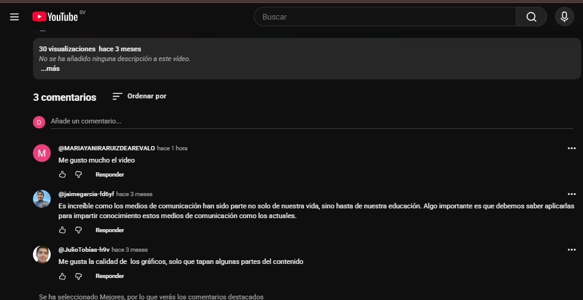
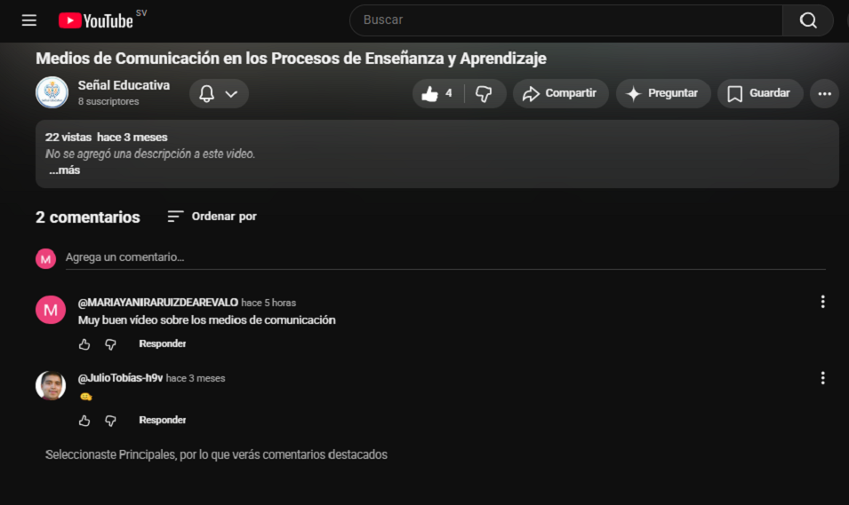
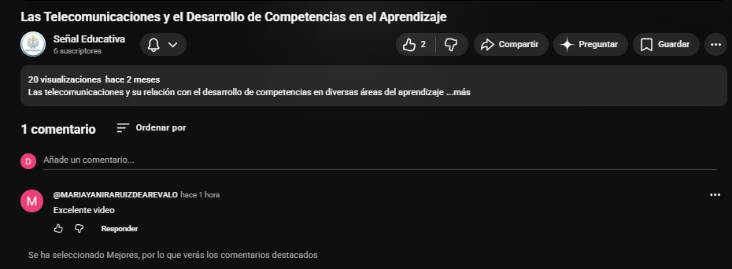
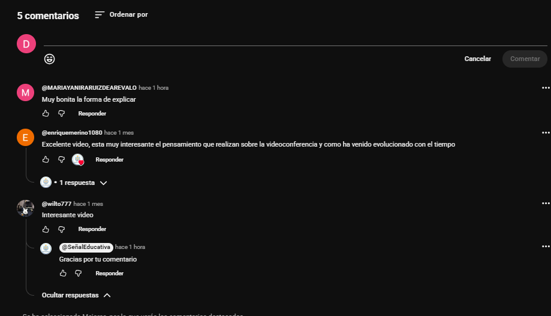
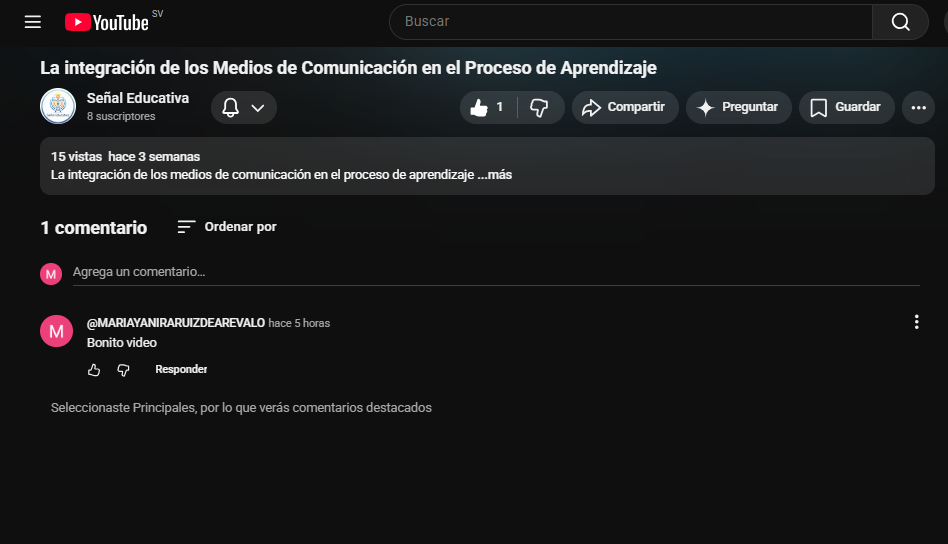
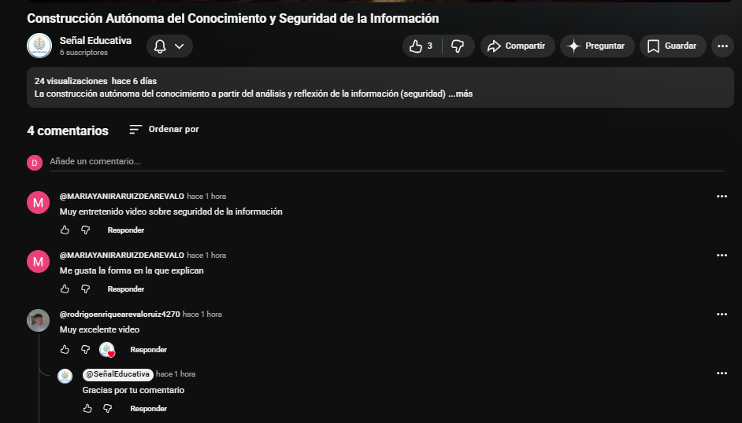

Virtualización de Contenidos Premium
Propuesta de Servicios Audiovisuales para la asignatura de Telecomunicaciones Educativas II. Diseñada por la productora Señal Educativa para transformar el currículo formal en experiencias de microaprendizaje audiovisual de alto impacto.
Consultoría Técnica
Diego Alexander Orellana Cortez
Edición y Postproducción de Video
Rodrigo Enrique Arevalo Ruiz
Presentador y Locución Profesional
Gabriela Guadalupe Hernandez Mejia
Diseño Instruccional y Guionismo
Erick Alexis Martinez
Diseño de Motion Graphics y Arte
Isaac Eliseo Santos Molina
Presentador y Dirección de Cámaras
Carta de Presentación
La alianza estratégica entre rigor instruccional y dinamismo audiovisual.
Estimados directivos and académicos de la institución,
En la era de la saturación informativa y los lapsos de atención selectiva, la educación superior se enfrenta a su mayor reto histórico: lograr un engagement real y significativo en los estudiantes. Tradicionalmente, la digitalización de la educación se ha confundido con el simple volcado de PDFs o grabaciones de clases magistrales monótonas de 2 horas. En Señal Educativa, entendemos que la virtualización educativa requiere un tratamiento de comunicación completamente diferencial.
Tenemos el agrado de presentar este Dossier Tecnopedagógico que recopila nuestra línea de producción de videos de 10 a 20 minutos, optimizados de forma nativa para plataformas hiper-accesibles como YouTube. No se trata simplemente de colocar una cámara; se trata de una traducción integral de las 6 unidades curriculares fundamentales de la materia Telecomunicaciones Educativas II.
Nuestra propuesta destaca por integrar de manera sinérgica la estética cinematográfica, el diseño de interfaces moderno y el diseño instruccional preciso. De este modo, convertimos conceptos densos (como el contexto sociocultural de la información o la soberanía tecnológica en telecomunicaciones) en piezas dinámicas enriquecidas, que fomentan el aprendizaje autónomo e interactivo.
Estamos convencidos de que este proyecto es el estándar de oro que su organización necesita para proyectarse como líder de la educación digital.
El Equipo Directivo
Consorcio Señal Educativa S.A. de C.V.
Marco y Justificación
Alineación conceptual con las exigencias del pliego técnico para el desarrollo educativo sostenible.
Desarrollo de Competencias
El diseño de nuestras piezas audiovisuales activa habilidades de alto nivel cognitivo: análisis, síntesis de la información y aplicación práctica en entornos reales. El video actúa como un andamiaje instruccional interactivo.
Sociedad del Conocimiento
La sociedad contemporánea exige modelos flexibles de autoaprendizaje. Nuestros recursos democratizan la información técnica, haciéndola digerible, compartible y socialmente significativa para comunidades de aprendizaje virtual.
Reducción de Brecha Digital
El uso de la infraestructura tecnológica de YouTube asegura que estudiantes con conectividades limitadas puedan acceder a contenidos optimizados, consumiendo un mínimo de datos de red y permitiendo su reproducción off-line.
¿Por qué de 10 a 20 minutos en YouTube como estándar pedagógico?
Investigaciones contemporáneas en neuroeducación evidencian que el umbral de atención sostenida en plataformas virtuales tiene un declive drástico pasados los 15 a 20 minutos, haciendo que el formato condensado sea óptimo. Condensar las unidades curriculares bajo este estándar nos obliga a eliminar la paja teórica e ir directamente a los conceptos centrales de la telecomunicación educativa. YouTube se elige como la infraestructura de distribución idónea porque ofrece transcoding inteligente automático, adaptando la resolución dinámicamente y garantizando una experiencia de aprendizaje libre de fricción técnica.
Metodología de Producción
El camino estructurado para garantizar consistencia técnica y académica.
Preproducción
- Desglose Instruccional: Transformación del programa curricular analítico en un guion pedagógico con estructura narrativa de tres actos.
- Guion Literario e Ilustrado: Sincronización entre lo que el locutor/presentador dirá y los gráficos o animaciones que aparecerán en pantalla.
Producción
- Captura de Audio: Cuidamos el audio al máximo porque sabemos lo importante que es. Grabamos con micrófonos adecuados para que todo se escuche nítido y sin interferencias
- Rodaje en Set Controlado: Grabación de los presentadores en un buen ambiente, optimizando iluminación y teleprompters para un performance natural.
Postproducción
- Edición No Lineal y Grafismo: Inserción de rótulos explicativos, esquemas visuales animados y transiciones sutiles para reforzar los conceptos complejos.
- Estrategia en YouTube: Redacción de metadatos estratégicos y organización de capítulos interactivos para hacer el contenido más accesible y fácil de descubrir.
Matriz de Contenidos & Videoteca
Acceda y reproduzca de manera directa las 6 unidades de la asignatura sin salir de la plataforma corporativa.
Contexto Histórico e Influencia de la Información en la Cultura
Análisis profundo sobre el surgimiento de las sociedades de la información, el tránsito de la cultura Gutenberg a la era del silicio, y cómo las telecomunicaciones alteran la cosmovisión y el comportamiento social contemporáneo.
Canal de YouTube Oficial
Explore, interactúe y suscríbase al espacio principal de Señal Educativa en YouTube.
Recursos Educativos y Material de Apoyo
Acceda a la carpeta oficial de Google Drive donde compartimos los guiones de producción y los resúmenes pedagógicos estructurados de las unidades.

Unidad 01
Contexto Histórico e Influencia de la Información en la Cultura

Unidad 02
Medios de Comunicación en los Procesos de Enseñanza y Aprendizaje

Unidad 03
Telecomunicaciones y Desarrollo de Competencias en el Aprendizaje

Unidad 04
Posibilidades Educativas de la Videoconferencia en la Ed. a Distancia

Unidad 05
La integración de los Medios de Comunicación en el Proceso de Aprendizaje

Unidad 06
Construcción Autónoma del Conocimiento y Seguridad de la Información
Alcance e Interacción
Estadísticas reales de tracción inicial y retroalimentación cualitativa recopilada del entorno académico.
Nota de Rigor Tecnopedagógico
Las siguientes métricas reflejan la etapa de implementación piloto y lanzamiento orgánico del canal. En Señal Educativa entendemos que el valor de un recurso audiovisual educativo no reside en la viralidad de masas, sino en el nivel de asimilación cualitativa y el engagement controlado del nicho de aprendizaje (estudiantes y docentes de la asignatura). Las analíticas muestran una progresión inicial sólida y feedback de gran valor para la mejora continua.
Contexto Histórico e Influencia de la Información en la Cultura

Medios de Comunicación en los Procesos de Enseñanza y Aprendizaje

"Muy buen vídeo sobre los medios de comunicación"
Las Telecomunicaciones y el Desarrollo de Competencias en el Aprendizaje

"Me aclaró totalmente cómo las redes de alta velocidad impactan en el trabajo colaborativo en tiempo real."
Posibilidades Educativas de la Videoconferencia en la Educación a Distancia

"Interesante video."
La integración de los Medios de Comunicación en el Proceso de Aprendizaje

"La analogía sobre la dieta medial es fantástica. Un recurso indispensable para docentes en formación."
Construcción Autónoma del Conocimiento y Seguridad de la Información

"Crucial el segmento sobre seguridad y protección de datos. Un cierre de asignatura excelente."
Reflexiones del Equipo
Un balance introspectivo sobre los aprendizajes, el impacto tecnológico y el desarrollo pedagógico de este proyecto.
"Al cerrar este ciclo, mi mayor aprendizaje fue entender que el video educativo no es solo un archivo multimedia, sino un nodo de información que debe ser eficiente. Como informático, mi chip inicial era optimizar código, pero aquí tuve que optimizar la transmisión del conocimiento. Diseñar contenido didáctico para telecomunicaciones me obligó a pensar en la estructura: cómo segmentar un tema complejo de redes en módulos consumibles (microlearning) para que el usuario final realmente procese la información sin sufrir sobrecarga cognitiva."
"Mi reflexión en este ciclo se centra en el canal y el medio. De nada sirve que creemos el video con la mejor pedagogía si el estudiante lo ve pausado por problemas de buffering. Como estudiantes de informática, tenemos la responsabilidad de entender el impacto del bitrate, los formatos de compresión (como H.264 o H.265) y la distribución a través de redes saturadas. Este proyecto me demostró que la verdadera informática educativa democratiza el acceso, logrando que el material sea ligero, fluido y accesible para cualquier ancho de banda."
"Para mí, la creación de estos videos educativos fue un ejercicio puro de UX (User Experience). Un video aburrido o mal estructurado es el equivalente a una aplicación con una interfaz terrible: el usuario la abandona. Este ciclo me enseñó a maquetar el contenido audiovisual pensando en la interactividad; no queríamos espectadores pasivos, sino estudiantes activos. Integrar elementos visuales claros, transiciones lógicas y llamadas a la acción transformó el video de un simple monólogo a una herramienta interactiva de aprendizaje."
"Mi balance de este ciclo va más allá de la producción: pienso en las métricas de rendimiento. Como informáticos, los datos nos hablan. Al analizar el comportamiento de los usuarios con el contenido didáctico (tasas de retención, en qué minuto la mayoría ponía pausa o abandonaba el video), pudimos iterar y mejorar la producción. Las telecomunicaciones educativas nos dan el poder de medir el aprendizaje en tiempo real, y este ciclo me demostró que el análisis de datos es vital para refinar cualquier estrategia educativa digital."
"Este ciclo me dejó claro que el video didáctico es solo una pieza de un rompecabezas más grande. Mi enfoque estuvo en la integración: cómo hacer que estos recursos audiovisuales convivan perfectamente dentro de un entorno virtual de aprendizaje (LMS como Moodle o Classroom) a través de protocolos estandarizados (como SCORM o xAPI). El reto no fue solo grabar, sino sistematizar el contenido para que las telecomunicaciones sirvan de puente real entre el servidor donde se aloja el video y el dispositivo del estudiante."
Referencias Bibliográficas
Fuentes teóricas, metodológicas y marcos regulativos globales que respaldan la viabilidad tecnopedagógica de esta propuesta.
Rigor de Investigación y Desarrollo
La arquitectura de contenidos de Señal Educativa no se limita a la producción de material multimedia estándar. Cada guion literario, técnico y pedagógico se cimenta sobre investigaciones contemporáneas de aprendizaje multimedia, neuroeducación y políticas de telecomunicaciones orientadas al desarrollo sostenible.
UNESCO (2026)
UNESCO. (2026). Innovación educativa y TIC en educación. UNESCO.
Sustento del Proyecto: Enmarca las directivas de transformación educativa digital necesarias para la virtualización de contenidos a nivel internacional.
Acceder a la fuenteArea Moreira, M. (2004)
Area Moreira, M. (2004). Las tecnologías de la información y comunicación en el sistema escolar: una revisión de las líneas de investigación. Revista Electrónica de Investigación y Evaluación Educativa.
Sustento del Proyecto: Brinda las bases de análisis metodológico de cómo se comportan las TIC y las infraestructuras escolares en la asimilación del aprendizaje.
Acceder a la fuenteGarcía-Valcárcel Muñoz-Repiso, A. (2002)
García-Valcárcel Muñoz-Repiso, A. (2002). Tecnología educativa: Características y evolución de una disciplina. Revista Educación y Pedagogía, 14(33), 65-87.
Sustento del Proyecto: Detalla la conceptualización histórica y la transdisciplinariedad de la Tecnología Educativa para un diseño instruccional estructurado.
Acceder a la fuenteLuján Ferrer, M. E., & Salas Madriz, F. (2009)
Luján Ferrer, M. E., & Salas Madriz, F. (2009). Enfoques teóricos y definiciones de la tecnología educativa en el siglo XX. Actualidades Investigativas en Educación, 9(2).
Sustento del Proyecto: Expone el análisis constructivista y cognitivo que valida el uso de herramientas asíncronas para el autoaprendizaje.
Acceder a la fuenteBlanton, W. E., Moorman, G., & Trathen, W. (1998)
Blanton, W. E., Moorman, G., & Trathen, W. (1998). Telecommunications and Teacher Education: A Social Constructivist Review. Journal of Teacher Education.
Sustento del Proyecto: Brinda el sustento teórico de la Unidad 3 sobre cómo el uso de las redes estimula la construcción colectiva del conocimiento.
Acceder a la fuente
"Es increíble como los medios de comunicación han sido parte no solo de nuestra vida, sino hasta de nuestra educación. Algo importante es que debemos saber aplicarlas para impartir conocimiento estos medios de comunicación como los actuales."